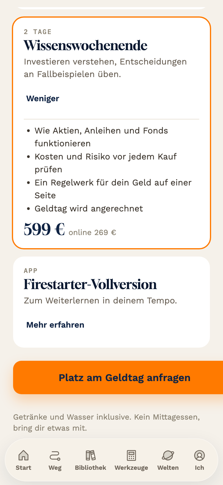
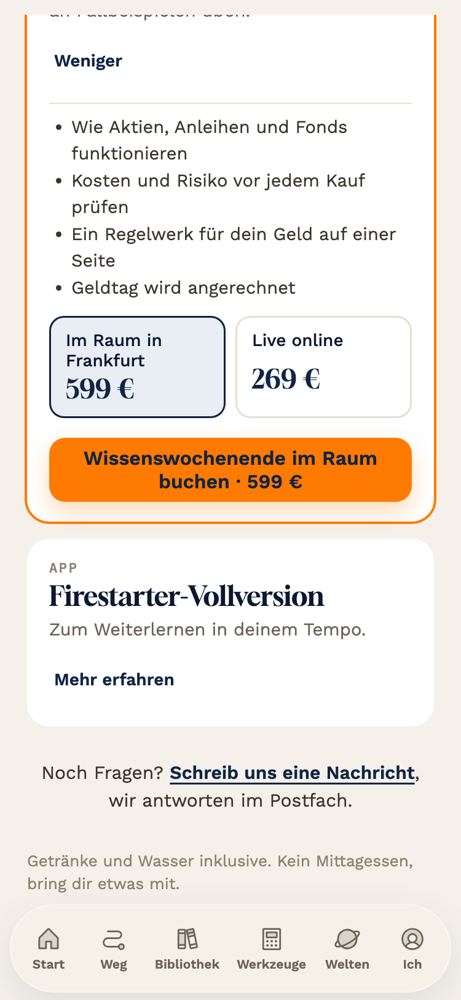
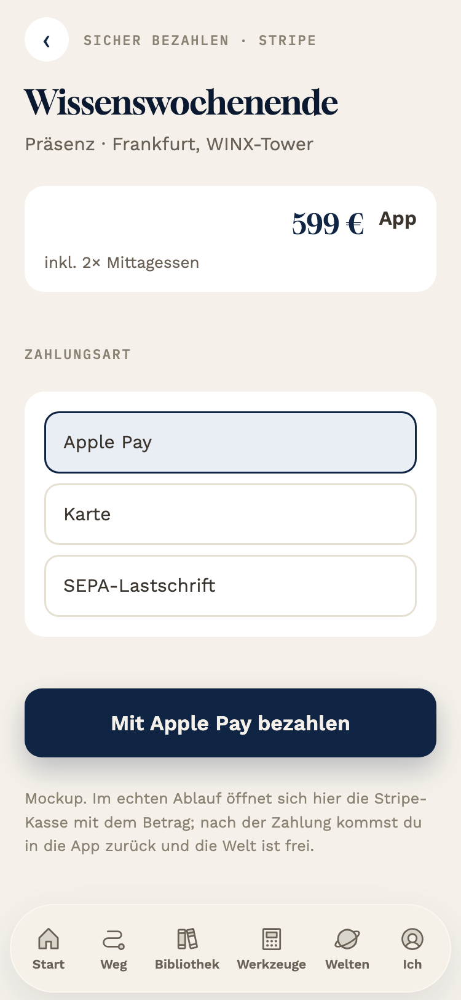
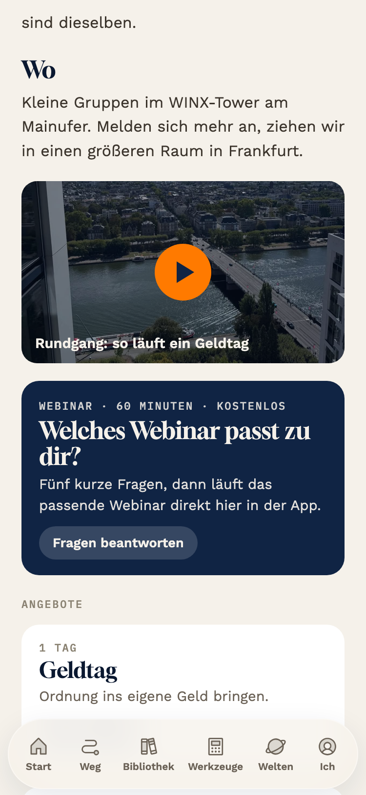

22.10.2026, nach deinem Diktat. Block 1: Jedes Angebot in den Welten bekommt seinen eigenen Kaufweg zum Stripe-Link, der Knopf „Platz anfragen" (führt heute auf Post) entfällt, „Noch Fragen? Schreib uns" bleibt als ruhiger Satz. Block 2: Webinar je Welt mit fünf Fragen, drei Wege. Block 3: zuschicken oder direkt ansehen. Block 4: Noten von Claude und Codex. Alle Bilder bei 375 px aus Kopien von Stand 18d, nichts an der App geändert.
1Kauf je Angebot: drei Wege
Ist: Wissenswochenende aufgeklappt, unten steht trotzdem „Platz am Geldtag anfragen" und führt auf Post. K1 Knopf im aufgeklappten Angebot, mit Wahl „Im Raum" oder „Live online", der Knopf nennt den Endpreis. K2 feste Leiste über der App-Leiste, wechselt mit dem aufgeklappten Angebot. K3 Preis und Knopf bei jeder Karte sofort sichtbar, „Mehr erfahren" klappt nur die Liste auf. Bei allen drei: unten „Noch Fragen? Schreib uns eine Nachricht" statt des orangen Knopfs. Die Kasse ist noch die Mockup-Kasse; mit deinen Stripe-Links wird daraus die Weiterleitung je Angebot.

Ist (Stand 18d): Wochenende offen, Knopf sagt Geldtag

K1: Wahl Raum/Online, Knopf mit Endpreis im Angebot

K1: nach dem Tipp, Kasse mit dem gewählten Angebot
W1 In der Welt: dunkelgrüne Karte „Welches Webinar passt zu dir?" direkt unter dem Rundgang-Video. Fünf Fragen nacheinander, dann läuft das passende Webinar sofort in der App; darunter freiwillig „Link für später" per Mail und das passende Angebot mit Kaufknopf (K1). W2 Zuschicken: gleiche Fragen, dann Pflichtfeld E-Mail, das Webinar kommt per Mail, kein direktes Ansehen. W3 Auf der Welten-Übersicht: vierte Karte hinter den drei Welten; die Fragen entscheiden Welt und Webinar zugleich. Die fünf Fragen sind Platzhalter (Ziel, Vorwissen, Zeit, Raum oder online, was dich zurückhält); welche Webinare es gibt, legt ihr fest.

W1: Karte in der Grünen Welt, unter dem RundgangW1: Frage 1 von 5
Deine Frage. Drei Möglichkeiten, mit Technik und Risiko:
Weg
Technik
Risiko
a) direkt ansehen
Video liegt bei einem Videodienst (Vimeo, Bunny oder YouTube ungelistet) und wird in die App eingebettet; kein eigener Server. GitHub Pages trägt keine Datei über 100 MB, eine Stunde Video passt dort nicht.
60 Minuten am Handy: ohne „du kannst pausieren, wir merken uns die Stelle" brechen Leute ab. Keine Adresse für später.
b) zuschicken
Braucht einen Server (das Flask-Backend der echten App) oder ein Fremdformular, dazu Brevo mit Double-Opt-in. Aus der statischen App allein geht kein Mailversand.
Mail-Wand vor dem Inhalt, Tippfehler, Spamfilter, Verzögerung. Die Adresse darf nur für die Zustellung genutzt werden, Werbung braucht ein eigenes Ja.
c) beides
Wie a, dazu ein freiwilliges Feld „Link für später". Mail-Teil wie b, aber niemand muss es ausfüllen.
Etwas mehr Technik; kein zusätzlicher Abbruch, solange die Mail freiwillig bleibt.
Meine Empfehlung: c. Wert zuerst, Kaufknopf direkt unter dem Video, Mail als freiwilliger Lead für René. Codex kommt unabhängig zum selben Ergebnis.
4Noten: Claude (blind) und Codex
Gleiches Briefing, fünf eingefrorene Kriterien (Verkauf, Umsetzbarkeit ohne Server, Recht, Handy bei 375 px, Konsistenz mit den gesetzten Regeln). Gesamt ist die niedrigste Einzelnote, nie das Mittel. Claude hat die Mockups gebaut, seine Note ist eine Selbstbewertung.
Variante
Claude
Codex
Größter Fehler (geprüft)
K1 Knopf im Angebot
8
5
Codex: „289 € / online 129 €", ein Knopf allein sagt nicht, was gekauft wird. Trifft, im Bild oben schon behoben: Wahl Raum/Online, Knopf mit Endpreis.
K2 Leiste unten
6
4
Antippen hätte zwei Bedeutungen (aufklappen und auswählen); zwei Leisten übereinander.
K3 immer sichtbar
7
3
Widerspricht deinem Entscheid 18c (Preis im aufgeklappten Angebot); sieht nach Preisliste aus.
W1 in der Welt
8
5
Codex: fünf Fragen mit nur einem Video je Welt wären Scheinpersonalisierung. Mein Widerspruch: Die Fragen können über die Welt hinaus leiten („Mein Kind soll Geld verstehen" führt zur Goldenen Welt), dann sind drei Videos eine echte Verzweigung.
W2 zuschicken
5
2
Mail-Wand vor dem Inhalt, Server nötig, widerspricht deinem Satz „ohne Fragen direkt kaufen".
W3 auf der Übersicht
7
2
Vierte Karte liegt hinter drei Wischbewegungen; Weltwahl und Webinar vermischt.
Beide Stimmen: K1 bauen (mit der Wahl Raum/Online, genau ein Knopf), W1 bauen mit Weg c. W2 und W3 nicht bauen. Wo ich Codex widerspreche: Er gibt allen K-Varianten Recht 5, weil der letzte Bestellknopf nicht belegt sei. Der liegt aber auf der Stripe-Kasse mit Endpreis, nicht in der App; der App-Knopf ist der Einstieg. Widerruf und Pflichtangaben gehören auf die Website, das bleibt.
Was du entscheidest: 1. K1 als Stand 19 bauen? 2. W1 mit Fragen, die auch in eine andere Welt leiten, oder zuerst nur das Welt-Webinar ohne Fragen (Codex)? 3. Videodienst für das 60-Minuten-Video. 4. Stripe-Links je Angebot und Ausführung, sobald du sie anlegst. 5. „Link per Mail" erst mit dem Server der echten App.